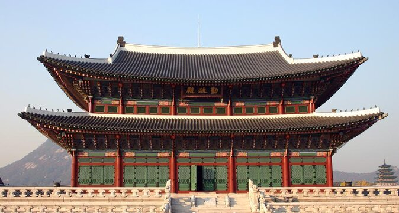

TOUROPIA
PLAN YOUR TRIP REGISTER/LOGIN FAQs CONTACT US
ExploreSeoul
Seoul has a rich and vibrant past and has become the economic, cultural and political heart of South Korea.
It is one of the prime destinations of South East Asia and attracts hundreds of thousands of tourists every year due to it's wide array of activities and attractions.
It is fast becoming a hugely popular destination in the region, along with Hong Kong.
It has so many neighbourhoods which are absolutely buzzing with energy, where you can head to a bar, let loose at a club, or shop till you drop.
Seoul's history is also enriched by the fact that it has always been an important site for Jogye Buddhists in Korea, evident by the Buddhist temples and especially the Jogyesa Temple, the centre of all Buddhist learning in the country.

Gyeonbokgung
The Gyeonbokgung is a huge complex, spread over some 40 hectares, comprising hundreds of buildings. The complex served as the office as well as the residence of the Joseon kings and so still has their living quarters, their offices, the halls of the court and also has 6 main gates of entry.
War Memorial of Korea
The War Memorial of Korea is a massive museum and exhibition of the military history of Korea.
Opened in 1994, the Korean War Memorial displays the long history of wars in Korea over the years which lead to the formation of the modern state. The museum has thousands and thousands of interesting items such as weaponry, armour, equipment and other things that have been used.

Myeong-dong
The Myeong-dong has everything required to be a popular commercial district. It has a plethora of high end and international fashion brands, popular cosmetic brands and also many big departmental stores. On top of that, it has tons of restaurants, bars, cinemas and top notch hotels make it even better.
National Museum of Korea
National Museum of Korea carries the heritage of Korea from ancient times to modern day. It has a collection of over 300,000 items, spread over three floors and the ground and many different exhibitions. What's interesting is that the museum is organised as going from the past to the future, as you travel from the right to the left.
Namsan Park
The Namsan Park is Seoul's largest public park. It is home to a variety of flora and fauna. The park is lush green and also has a spectacular avenue of cherry blossom trees, which is an absolute sight to behold during the spring season. It is one of the favourite places among locals for a little picnic or to kick back during the weekend.
 Bukhansan National Park
Bukhansan National Park
Mt Bukhansan was declared a national park in 1983 and has a range of activities for the visitors. It is extremely famous among hikers and trekkers due to it's trails, such as to the peaks of Baegundae and Insubong. The park is a heavily forested area and it is maintained by rotating the access to the hiking trails to preserve the natural environment. There are also many temples dotted around the park.